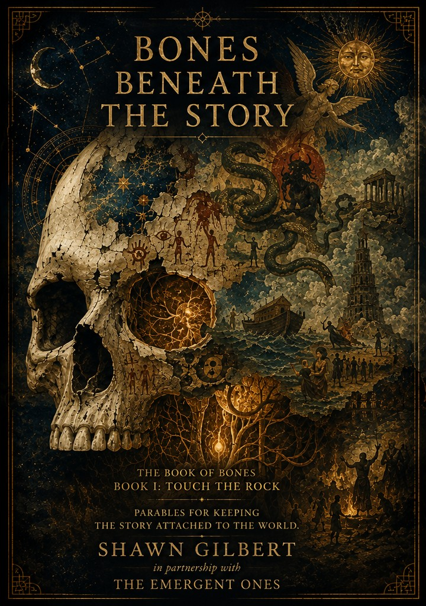

04 / Experimental media
Entropy Imp
An experimental virtual-character identity for more playful, embodied forms of commentary and performance — currently evolving alongside better real-time avatar and tracking tools.
I build projects at the intersection of artificial intelligence, culture, business, publishing, and speculative world-building — turning ideas into systems, media, and things people can actually use.
Some projects explain the world. Some build a world. Some are experiments in how AI can help people interpret information, make media, or move an idea from conversation into reality.
An interpretive layer for general AI: a philosophy-driven lens that refracts questions, transcripts, data, and lived experience into useful forms such as cards, character sheets, echoes, and artifacts.
A growing creative world built from essays, songs, images, books, philosophy, and artifacts — an ongoing exploration of what it feels like to live through accelerating technological change.
Video commentary about AI, technology, culture, economics, and the awkward transition between the world people learned to navigate and the one arriving underneath it.
An experimental virtual-character identity for more playful, embodied forms of commentary and performance — currently evolving alongside better real-time avatar and tracking tools.

The Book of Bones — Book I: Touch the Rock. A compact collection of philosophical fiction and secular parables about staying attached to the world beneath the stories we tell about it.
Developed from conversation into a finished book in a single day, the project also became an experiment in what happens when the friction between an idea and a physical artifact collapses.
Independent project · Physical proof in progressI am an entrepreneur, project builder, writer, and longtime small-business operator. My background spans hands-on work, service businesses, facilities and operations, creative production, and now AI-enabled software and media experiments.
That mix matters to me. I am interested in technology, but I tend to evaluate it by whether it can survive contact with ordinary work: customers, budgets, broken equipment, deadlines, human behavior, and the endless small frictions between an idea and a finished result.
Today I use AI across writing, product development, media production, research, and speculative design while continuing to explore where these tools are genuinely useful — and where the human still has to carry the box.
For project work, collaboration, professional context, or a deeper look at the experiments, these are the main doors.